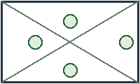

У прямоугольника проведены диагонали и отмечены четыре круглые области. Нажмите на кружок, чтобы открыть одно из упражнений 1–4.

В координатах круга записаны две координаты центра и радиус в пикселях.
Назад к карте предыдущих работ